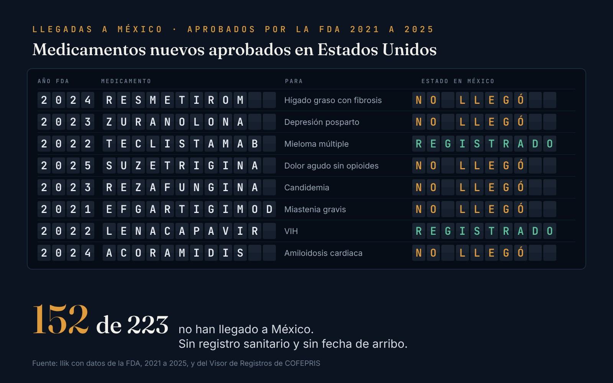
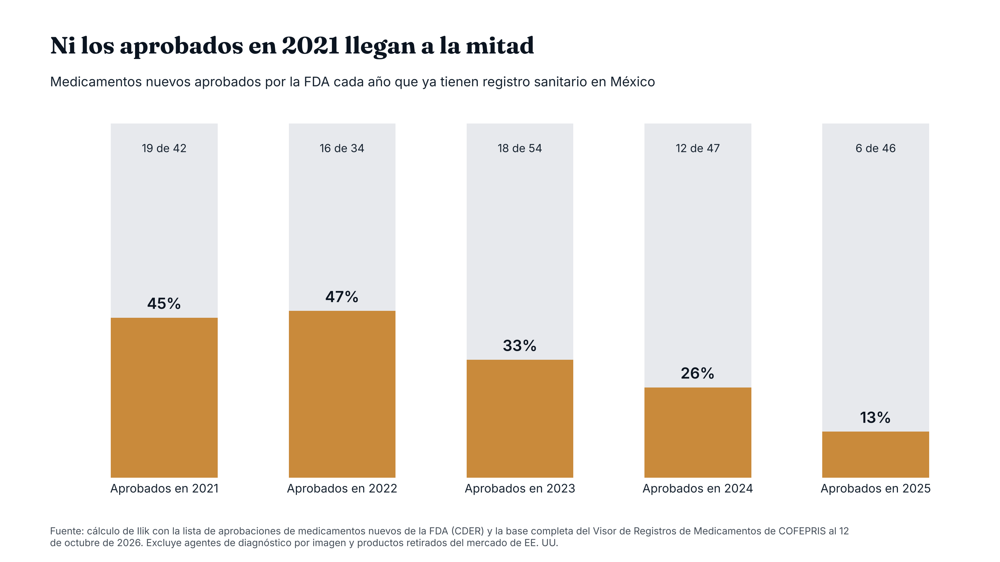
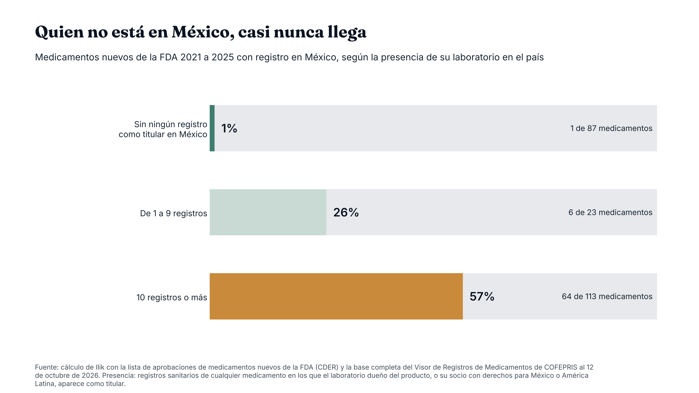
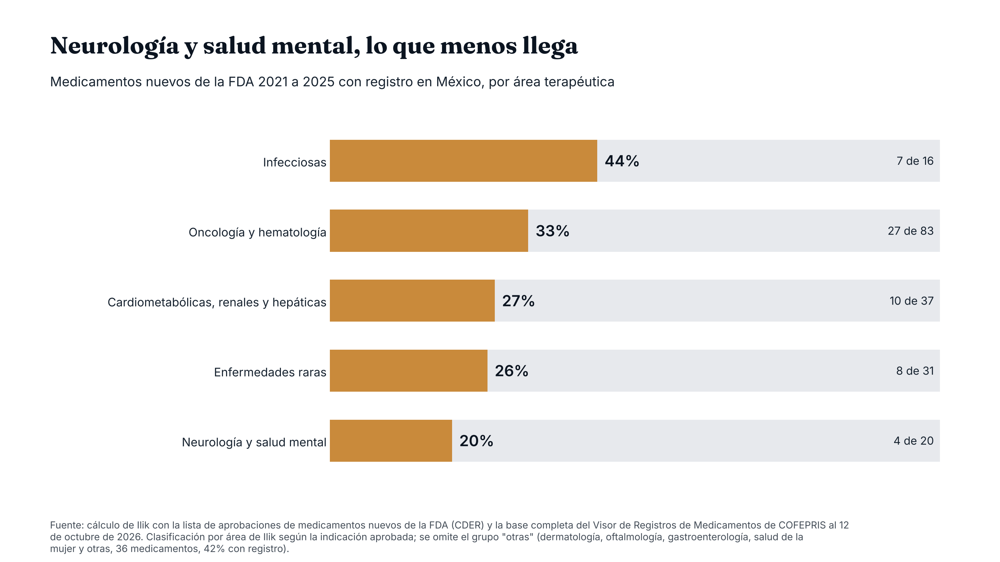

Observatorio / Medicamentos y COFEPRIS
Investigación¿Qué tienen en común los medicamentos que nunca llegan a México?
De los 223 medicamentos nuevos que la FDA aprobó entre 2021 y 2025, solo 71 tienen registro sanitario en México. Revisé uno por uno los que faltan. La mayoría tiene algo en común: su dueño no tiene a nadie aquí, y el mercado mexicano rara vez le alcanza para venir.

Si trabaja en un hospital, es probable que conozca esta escena. Un especialista pide un medicamento que ya se usa en Estados Unidos, y en farmacia tienen que decirle que aquí no existe. Quise entender por qué pasa tan seguido. Cada año la FDA aprueba entre 37 y 55 medicamentos que nunca antes se habían autorizado en ese país.1 En buena medida, esa lista es la medicina de los próximos años. Tomé la de 2021 a 2025 y busqué cada medicamento en la base completa de COFEPRIS, por su nombre en español, sus variantes de escritura y su marca.2
De 223 medicamentos que siguen a la venta en Estados Unidos, 71 tienen registro en México. Uno de cada tres.
Lo primero que uno piensa es que muchos de los 152 que faltan son para enfermedades raras, con pocos pacientes, o que el trámite en México es lento. Los datos no van por ahí. Lo que más se repite es el dueño. En 86 casos, el medicamento es de un laboratorio que no tiene un solo registro en México, ni propio ni de un socio. Y sin alguien aquí, la ley no permite registrar. Además, el mercado mexicano pocas veces paga lo que cuesta empezar desde cero. El sector público compra mucho volumen a precio bajo, y el privado es angosto.
El hueco es grande y no se cierra con el tiempo

Lo más reciente es lo que menos ha llegado. De lo aprobado en 2025, solo 13% tiene registro. Podría pensarse que es cuestión de esperar, pero el tiempo lo arregla poco. De los 76 medicamentos aprobados en 2021 y 2022, 41 siguen sin registro cuatro o cinco años después. Ningún año llega a la mitad.
Cuando un medicamento sí llega, la espera no es tan larga. En los 66 casos registrados aquí después de su aprobación en Estados Unidos, pasaron 20 meses de mediana.12 La mitad tardó entre 13 y 29 meses. COFEPRIS tiene su parte. Entre 2019 y 2022 acumuló más de 14,000 trámites sin concluir, y en 2021 tardaba en promedio 313 días en resolver uno.3 Pero ese rezago afectó a todos los trámites por igual. No explica por qué unos medicamentos llegan y otros no.
Lo que decide es si alguien está aquí para registrarlo
Para cada medicamento busqué quién es el dueño. Luego conté cuántos registros sanitarios tiene en México, de cualquier producto, ya sea a su nombre o a través de un socio con derechos para la región.

La diferencia es enorme. De los 223 medicamentos, 87 son de laboratorios que no tienen un solo registro en México. De esos 87 llegó uno, y no por su dueño. Es la terlipresina, que otras empresas registraron aquí años antes de que se aprobara en Estados Unidos.2 En cambio, los laboratorios con diez registros o más ya trajeron 64 de sus 113 medicamentos nuevos. Es el 57%.
Y no son medicamentos menores. De los 86 que faltan y cuyo dueño no está en México, al menos 29 vendieron más de 100 millones de dólares en 2025.4 Resmetirom, para hígado graso con inflamación y fibrosis, vendió 958 millones.5 Efgartigimod, para miastenia gravis, cerca de 4,200 millones en el mundo.6 Ublituximab, para esclerosis múltiple, 594 millones en Estados Unidos.4 Vender bien afuera no garantiza llegar.
Sus dueños, en su mayoría, son empresas medianas de biotecnología, y su forma de crecer es conocida. Según un análisis de ZS sobre biotecnológicas emergentes entre 2011 y 2025, 87% lanzó su primer medicamento solo en Estados Unidos.7 Apenas alrededor de 40% llegó después a Europa, y la mitad de esas veces fue con una licencia. México está todavía más atrás en la fila. Para 72 de esos 86 medicamentos no encontré ningún acuerdo con un socio fuera de Estados Unidos.8
La ley pide a alguien aquí
¿Por qué pesa tanto estar aquí? Porque para registrar un medicamento en México hace falta una operación local. No se necesita una planta, pero sí un representante legal con domicilio en el país, un establecimiento con licencia o aviso de funcionamiento, su responsable sanitario y una unidad de farmacovigilancia.910 Esa unidad responde por el medicamento una vez que está a la venta. El trámite cuesta menos de 200,000 pesos por una molécula nueva.11 Lo caro es sostener esa estructura año con año.
La reforma más reciente no cambió eso. Desde abril de 2026, registrar un medicamento que ya aprobó una agencia reconocida es más rápido. Ya no pasa por la reunión técnica del Comité de Moléculas Nuevas, y solo se pide una opinión si hay un riesgo. Además, los datos del registro quedan protegidos cinco años.12 Ayuda, pero sigue haciendo falta alguien aquí.
Y el mercado pocas veces justifica lo que cuesta estar
Del otro lado está cuánto se puede vender. El sector público compra la mayoría de las piezas de medicamentos en México, pero no la mayoría del dinero. Según la industria, en 2019 se llevaba 60% de las unidades y solo 26% del valor.13 Es volumen a precio bajo, y además con riesgo de cobro. En 2026 la industria reportaba adeudos de entre 6,000 y 14,000 millones de pesos, con facturas de más de cuatro años.14 Un medicamento caro y recién llegado no puede contar con ese canal en sus primeros años.
El dinero está en el mercado privado, que es angosto. Solo cerca de 10% de la población tiene seguro de gastos médicos mayores,15 y 41% del gasto en salud sale directo del bolsillo de las familias.16 Las empresas que sí entran lo saben. Lanzan primero en el canal privado y buscan la compra pública después. Una de ellas dice que es lo común entre farmacéuticas medianas de especialidad.17 El cruce lo confirma. De los 71 medicamentos nuevos con registro en México, solo 12 aparecen en las compras consolidadas del sector público de 2025 a 2026 o de 2027 a 2028.25 Los demás, por ahora, dependen de hospitales y pacientes privados. A una compañía con filial, ese mercado le alcanza para empezar. A una que tendría que montar todo desde cero, probablemente muchas veces no. No hay una cifra pública que lo mida, pero es lo que sugiere quién llega y quién no.
La enfermedad rara no es el freno, aunque encarece la entrada
Quedaba revisar la idea de las enfermedades raras. De los 223 medicamentos, 117 tienen designación de medicamento huérfano de la FDA.18 Llegaron 28% de ellos, contra 36% de los demás. Es una diferencia pequeña y no es estadísticamente significativa. Además, casi desaparece al comparar laboratorios parecidos. Entre los de empresas con diez registros o más en México, llegaron 55% de los huérfanos y 58% de los demás. Entre los de empresas sin presencia aquí, casi ninguno de unos ni de otros. Si los huérfanos tuvieran la misma mezcla de dueños que el resto, llegarían en una proporción muy parecida, alrededor de 36%. Lo que los separa es, sobre todo, quién los vende.
Más aún, cuando una empresa decide entrar, la vía de enfermedades raras funciona. De los 71 medicamentos que llegaron, 28 están registrados en México como huérfanos.2 Ese reconocimiento es gratuito, y COFEPRIS aprobó 81% de las solicitudes entre 2010 y 2017.19
La idea sí tiene algo de cierto, aunque por otro lado. México no tiene un registro nacional de enfermedades raras,20 y la guía de COFEPRIS de 2025 pide demostrar cuántos pacientes hay en el país para reconocer un medicamento como huérfano.21 Sin datos propios, ese trámite cuesta más. A quien ya decidió entrar no lo detiene. A quien todavía lo está pensando, le da una razón más para esperar.
Dónde se nota el hueco

Por área, lo que menos llega es neurología y salud mental, con 4 de 20 medicamentos. Faltan, por ejemplo, un tratamiento oral para la depresión posparto (zuranolona), uno para el insomnio (daridorexant) y un analgésico sin opioides para el dolor agudo (suzetrigina). Detrás de cada uno hay pacientes que aquí siguen con las opciones de antes. Después vienen las enfermedades cardiometabólicas, renales y hepáticas, con 10 de 37. Además de resmetirom, faltan un medicamento para la hipertensión resistente (aprocitentán) y dos para la nefropatía por IgA (sparsentán y atrasentán). También faltan dos para el corazón, uno para la miocardiopatía hipertrófica (aficamten) y otro para la amiloidosis cardiaca (acoramidis).
Oncología y hematología, el área con más aprobaciones, va en 27 de 83. Llegaron los anticuerpos biespecíficos de las grandes farmacéuticas para mieloma y linfoma (teclistamab, talquetamab, elranatamab, glofitamab, epcoritamab y mosunetuzumab). Lo que falta son, sobre todo, moléculas de empresas medianas. También llegan más los biológicos que las moléculas químicas pequeñas, 45% contra 22%. En parte es por lo mismo, porque muchas moléculas pequeñas recientes son de empresas que no están aquí. Pero la diferencia se mantiene aun comparando laboratorios con presencia parecida.
En el hospital, el hueco más visible es el de las infecciones resistentes
En infecciosas llegaron 7 de 16 medicamentos. Entre ellos están lenacapavir para VIH, maribavir para citomegalovirus, ceftobiprol y dos anticuerpos contra el virus sincitial respiratorio (nirsevimab y clesrovimab). Lo que preocupa es lo que falta. Varias herramientas nuevas contra bacterias y hongos resistentes no tienen registro, y son justo las que un hospital necesita en sus casos más difíciles.
| Medicamento | Uso aprobado por la FDA | Aprobación FDA | Ventas en EE. UU. 2025 | Registro en México |
|---|---|---|---|---|
| Sulbactam con durlobactam | Neumonía hospitalaria por Acinetobacter | Mayo de 2023 | 33 millones de dólares | No |
| Cefepima con enmetazobactam | Infección urinaria complicada | Febrero de 2024 | Sin dato público | No |
| Rezafungina | Candidemia y candidiasis invasiva | Marzo de 2023 | Sin dato público | No |
| Taurolidina con heparina | Prevención de infección en catéter de hemodiálisis | Noviembre de 2023 | 259 millones de dólares | No |
| Sulopenem con probenecid | Infección urinaria no complicada (oral) | Octubre de 2024 | Sin dato público | No |
| Gepotidacina | Infección urinaria no complicada (oral) | Marzo de 2025 | Sin dato público | No |
Fuentes: FDA 1; COFEPRIS 2; Innoviva y CorMedix 22. Ventas netas reportadas por la empresa.
Que no tengan registro no quiere decir que ningún paciente pueda recibirlos. Existen la importación para casos específicos y los programas de acceso temprano. Cefiderocol, otro antibiótico para bacterias resistentes aprobado por la FDA en 2019, tampoco tiene registro. Llega por un programa de acceso caso por caso.23 Pero un medicamento sin registro no entra al surtido regular del hospital. Cada uso se tramita por separado, y mientras tanto el paciente espera.
También faltan genéricos
También faltan medicamentos viejos. Repetí el ejercicio con moléculas que en Estados Unidos ya tienen genérico desde hace años. Encontré varias de uso hospitalario y de enfermedades crónicas sin un solo registro en México, o solo con el de la marca original.
| Medicamento | Uso principal | Primer genérico en EE. UU. | Mercado en EE. UU. al entrar el genérico (dólares) | Registros en México | Alternativa con registros vigentes en México |
|---|---|---|---|---|---|
| Liraglutida | Diabetes y obesidad | Junio de 2024 (genérico autorizado) | 1,300 millones (2024) | 3, todos de Novo Nordisk | Semaglutida (4) y otros GLP-1 |
| Lurasidona | Esquizofrenia y depresión bipolar | Febrero de 2023 | 4,200 millones (2022) | 0 | Olanzapina (26) |
| Tolvaptán | Riñón poliquístico | Abril de 2025 (presentación para riñón poliquístico) | 1,467 millones (2024) | 0 | Sin alternativa directa |
| Icosapento de etilo | Riesgo cardiovascular | Noviembre de 2020 | 607 millones (2020) | 0 | Sin alternativa directa |
| Bivalirudina | Anticoagulación en cateterismo | Julio de 2015 | 500 millones (2014) | 0 | Heparina inyectable (7) |
| Guanfacina de liberación prolongada | TDAH | Diciembre de 2014 | 475 millones (2013) | 0 | Atomoxetina (10) |
| Eslicarbazepina | Epilepsia | Mayo de 2025 | 395 millones (2025) | 0 | Lacosamida (10) |
| Fondaparinux | Anticoagulación | Agosto de 2011 | 340 millones (2011) | 1 | Enoxaparina (9) |
| Decitabina | Síndromes mielodisplásicos | Julio de 2013 | 260 millones (2013) | 0 | Azacitidina (10) |
| Ambrisentán | Hipertensión pulmonar | Marzo de 2019 | 247 millones (2019) | 1 | Bosentán (9) |
| Roflumilast | EPOC | Octubre de 2022 (lanzamientos) | 211 millones (2018) | 1, no vigente | Sin alternativa directa |
| Silodosina | Crecimiento de próstata | Noviembre de 2018 | 199 millones (2018) | 0 | Tamsulosina (34) |
| Nicardipino intravenoso | Crisis hipertensiva | Septiembre de 2008 | 181 millones (2008) | 0 | Clevidipino (1) |
| Carbonato de lantano | Fósforo alto en diálisis | Agosto de 2017 | 122 millones (2017) | 0 | Sevelámero (5) |
| Lapatinib | Cáncer de mama | Septiembre de 2020 | 61 millones (2020) | 1 | Sin alternativa directa |
| Micafungina | Infecciones por hongos | Abril de 2020 | 61 millones (2025, ya genérico) | 0 | Caspofungina (11) |
| Nelarabina | Leucemia linfoblástica T | Noviembre de 2021 | 35 millones (2021) | 0 | Sin alternativa directa |
| Argatrobán | Trombocitopenia por heparina | 2013 (genérico autorizado) | 18 millones (2020) | 0 | Sin alternativa directa |
Fuentes: COFEPRIS 2 para los registros; fechas y valores de mercado de los comunicados de los fabricantes de genéricos, que citan datos de IQVIA o IMS a precio de lista, y de los reportes de los laboratorios originales 24. Cada cifra es del año indicado, casi siempre el de la entrada del genérico, así que no son comparables entre sí.
Para varias de estas ausencias hay una alternativa registrada en México, y a veces el sector público ya la compra. En la compra consolidada 2027 a 2028 aparecen caspofungina y azacitidina, pero no micafungina ni decitabina.25 Otras no tienen sustituto directo. Liraglutida muestra lo que cuesta depender de un solo proveedor. En la compra consolidada 2025 a 2026 se adjudicaron 2,151 millones de pesos de liraglutida, todo a Novo Nordisk. En Estados Unidos ya compite con genéricos.25
Una advertencia. Que un genérico exista en Estados Unidos no significa que en México esté libre de patente, y eso hay que confirmarlo molécula por molécula en el IMPI. Aun así, a quien arma el surtido de un hospital la lista le sirve. Son opciones que hoy no puede comprar y que aparecerían el día que algún laboratorio decida registrarlas.
Cómo se cierra el hueco, y qué puede hacer un hospital
Si el problema es no tener a nadie aquí, la solución es que alguien preste su presencia. Así llegó ceftobiprol. Su registro en México está a nombre de Laboratorio LKM, de Grupo Biotoscana, que pertenece a la canadiense Knight Therapeutics y licenció ese antibiótico para América Latina.226 Entre 2024 y 2025, la misma empresa obtuvo los registros mexicanos de tafasitamab, pemigatinib y fostamatinib, de laboratorios medianos de Estados Unidos y Europa. En 2025 sumó los derechos para la región de retifanlimab y axatilimab, dos medicamentos de esta lista que aún no tienen registro.227 Así suele funcionar. Quien descubre el medicamento cede los derechos a una empresa que ya opera en el país, en lugar de abrir una filial.
Ese camino tampoco cubre todo. De los 86 medicamentos que faltan y cuyo dueño no está en México, 14 ya tienen un socio fuera de Estados Unidos. Pero ese socio tampoco tiene registros aquí, o el contrato deja fuera a México.8 Para los otros 72 no encontré ningún acuerdo.
Si usted está en un comité de farmacia o dirige compras, esta lista no es para salir a comprar. Es un mapa de lo que hoy no se consigue con normalidad. Cuando un especialista pida algo que ya se usa en otros países, le permite responder con datos. Saber si tiene registro, o si solo llega por importación o acceso temprano, cambia el trámite, el plazo y el precio. También ayuda a anticipar. Lo que es de un laboratorio presente en México, o con socio en la región, tiene más probabilidad de llegar pronto. Y recuerda que tener registro no es lo mismo que estar disponible. Un registro vigente dice que un medicamento puede venderse, no que se esté vendiendo ni a qué precio. Eso solo lo muestran los datos de compra de cada hospital.
Hice este análisis pensando en esa conversación entre el médico que pide y la farmacia que no puede surtir. No la resuelve, pero ayuda a tenerla con datos en la mano.
Lo que no se mide, se paga de más.
Nota metodológica
Universo: los 238 medicamentos nuevos que aprobó el Centro de Evaluación e Investigación de Medicamentos (CDER) de la FDA entre el 1 de enero de 2021 y el 31 de diciembre de 2025.1 No incluye vacunas, terapias celulares ni génicas, que aprueba otro centro de la FDA. Excluimos 8 agentes de diagnóstico por imagen y 7 productos retirados del mercado estadounidense (umbralisib, mobocertinib, aducanumab, melfalán flufenamida, infigratinib, fenilbutirato de sodio con taurursodiol e ibrexafungerp).28 Quedan 223. Registro en México: buscamos cada molécula en la base completa del Visor de Registros de Medicamentos de COFEPRIS, descargada el 12 de octubre de 2026 (14,949 registros de cualquier estado, con emisiones hasta el 9 de octubre), en los campos de denominación genérica, denominación distintiva, sustancia y cantidad, con su nombre en español, sus variantes de escritura y su marca; revisamos a mano cada coincidencia y volvimos a buscar cada ausencia por la raíz del nombre y por la marca.2 Cuenta como registrado un medicamento con al menos un registro de cualquier estado. El reconocimiento de medicamento huérfano no equivale a un registro sanitario, así que un medicamento que entre por esa vía puede no aparecer en la base. Presencia del laboratorio: número de registros de cualquier medicamento en los que el dueño del producto, o su socio cuando la licencia cubre México o América Latina, aparece como titular. Dueños, socios y licencias se identificaron con información pública de cada empresa.8 Designación huérfana: listas oficiales de los informes anuales de la FDA.18 Ventas: reportes anuales de cada empresa; hay dato para 52 de los 86 medicamentos ausentes de laboratorios sin presencia.4 Tiempo al registro: meses entre la aprobación de la FDA y la emisión del primer registro en México; excluye cinco moléculas registradas aquí antes que en Estados Unidos. Comparación entre huérfanos y no huérfanos: regresión logística con presencia del laboratorio, tipo de molécula y año de aprobación como controles; el efecto de ser huérfano no es significativo (p = 0.58); el de ser biológico sí lo es (p = 0.002). Compra pública: buscamos cada medicamento registrado en las tablas de adjudicación del portal de la Secretaría de Salud para las compras 2025 a 2026 y 2027 a 2028; no contamos la presentación subcutánea de pembrolizumab porque su clave no se distingue de la intravenosa.25 Genéricos: partimos de primeros genéricos aprobados en Estados Unidos y buscamos cada molécula en la misma base con el mismo método. En moléculas muy antiguas, la ausencia es una señal más débil, porque algunos programas públicos se abastecen por importación sin registro. Esta pieza describe lo que registran fuentes públicas; no evalúa a ninguna empresa ni recomienda ningún medicamento. La base del cruce está disponible a solicitud.
Fuentes
- FDA, Center for Drug Evaluation and Research. Novel Drug Approvals for 2021 a 2025. Ver en www.fda.gov ↩
- COFEPRIS. Visor de Registros de Medicamentos, base completa al 12 de octubre de 2026. Ver en registros.cofepris.gob.mx ↩
- Svarch-Pérez y otros. Análisis de los trámites de COFEPRIS 2019 a 2022. Salud Pública de México, 2024. Ver en medigraphic.com ↩
- Reportes anuales y de cuarto trimestre de 2025 de cada empresa; compilación de Ilik con fuente por medicamento, disponible a solicitud. Ublituximab: TG Therapeutics, resultados 2025,. Ver en www.1stoncology.com ↩
- Madrigal Pharmaceuticals. Resultados del cuarto trimestre y año completo 2025. Ver en www.barchart.com ↩
- argenx. Resultados del cuarto trimestre de 2025 (SEC). Ver en www.sec.gov ↩
- ZS. "US novel first launches: implications for emerging biopharma". Ver en www.zs.com ↩
- Ilik, revisión de acuerdos de licencia y distribución de cada medicamento con base en comunicados de las empresas y reportes ante la SEC; detalle por medicamento disponible a solicitud. ↩
- COFEPRIS. Trámite COFEPRIS-04-004-I, registro de medicamentos por acuerdos de equivalencia, vía sustituida en 2025 (requisitos de representante legal, licencia o aviso y responsable sanitario). Ver en www.gob.mx ↩
- Secretaría de Salud. NOM-220-SSA1-2016, Instalación y operación de la farmacovigilancia. Ver en platiica.economia.gob.mx ↩
- Ley Federal de Derechos, artículo 195-A. Ver en mley.mx ↩
- Greenberg Traurig. "Reformas al Reglamento de Insumos para la Salud", 13 de mayo de 2026. Ver en www.gtlaw.com ↩
- Expansión. "¿Qué tanto dependen las farmacéuticas de las ventas a gobierno?", 30 de mayo de 2019 (datos de Canifarma con QuintilesIMS). Ver en expansion.mx ↩
- The Rio Times. Adeudos de IMSS-Bienestar con la industria farmacéutica, 2026. Ver en www.riotimesonline.com ↩
- La Razón. Participación de los seguros de gastos médicos (datos de AMIS). Ver en www.razon.com.mx ↩
- Expansión Política. "Mexicanos gastan más de su bolsillo para comprar medicamentos", 27 de mayo de 2025. Ver en politica.expansion.mx ↩
- PharmaBoardroom. "Going private: the Mexican private healthcare sector boom". Ver en pharmaboardroom.com ↩
- FDA, CDER. New Drug Therapy Approvals 2021 a 2025 (sección de medicamentos para enfermedades raras). Ver en fda.gov Ver en fda.gov Ver en fda.gov Ver en fda.gov Ver en www.fda.gov ↩
- COFEPRIS. Presentación sobre medicamentos huérfanos ante la Federación Mexicana de Enfermedades Raras (FEMEXER). Ver en www.femexer.org ↩
- Cámara de Diputados. Gaceta Parlamentaria, iniciativa para crear el Registro Nacional de Enfermedades Raras, 26 de marzo de 2025. Ver en gaceta.diputados.gob.mx ↩
- ConsultorSalud. Guía de COFEPRIS para el reconocimiento de medicamentos huérfanos, 2 de octubre de 2025. Ver en consultorsalud.com.mx ↩
- Innoviva, resultados 2025: CorMedix, resultados 2025:. Ver en www.biospace.com Ver en www.biospace.com ↩
- Outsourcing-Pharma. "Inceptua expands early access program for cefiderocol in Latin America", 16 de mayo de 2024. Ver en outsourcing-pharma.com ↩
- Comunicados de lanzamiento de genéricos y reportes de originadores: Hikma (liraglutida) Lupin (lurasidona) Lupin (tolvaptán) Amarin (icosapento) TCTMD (bivalirudina) Drug Store News (guanfacina) OptumRx (eslicarbazepina) Drug Discovery Trends (fondaparinux) Fierce Pharma (decitabina) Teva (ambrisentán) BioSpace (roflumilast) Lupin (silodosina) SEC/EKR (nicardipino) OptumRx (lantano) Medical Dialogues (lapatinib) Indian Pharma Post (micafungina) Zydus (nelarabina) Medical Dialogues (argatrobán). Ver en www.hikma.com Ver en www.lupin.com Ver en lupin.com Ver en amarincorp.gcs-web.com Ver en www.tctmd.com Ver en drugstorenews.com Ver en prod-prorx.optum.com Ver en www.drugdiscoverytrends.com Ver en www.fiercepharma.com Ver en www.tevapharm.com Ver en www.biospace.com Ver en www.lupin.com Ver en www.sec.gov Ver en prod-prorx.optum.com Ver en medicaldialogues.in Ver en www.indianpharmapost.com Ver en www.zyduslife.com Ver en medicaldialogues.in ↩
- Secretaría de Salud. Resultado de las Compras, compras 2025 a 2026 y 2027 a 2028 (valor máximo adjudicado). Ver en monitoreocompra.salud.gob.mx ↩
- Basilea. Acuerdo de licencia con Grupo Biotoscana para América Latina. Advent International. "Grupo Biotoscana acquires Laboratorio LKM". Knight Therapeutics. Cierre de la adquisición de Grupo Biotoscana. Ver en www.basilea.com Ver en www.adventinternational.com Ver en knighttx.com ↩
- Knight Therapeutics. Annual Report 2025. Knight Therapeutics e Incyte, ampliación del acuerdo para América Latina, 2025. Ver en s203.q4cdn.com Ver en investors.knighttx.com ↩
- Retiros: BioSpace, "5 Accelerated Approvals Gone Wrong" Pharmacy Times (melfalán flufenamida) Synapse (infigratinib) Fortune (fenilbutirato con taurursodiol) TipRanks (ibrexafungerp). Ver en www.biospace.com Ver en pharmacytimes.com Ver en synapse.patsnap.com Ver en fortune.com Ver en www.tipranks.com ↩

Fundador de Ilik. Estadístico de formación, con más de ocho años al frente de la inteligencia comercial del canal hospitalario privado en la industria farmacéutica.